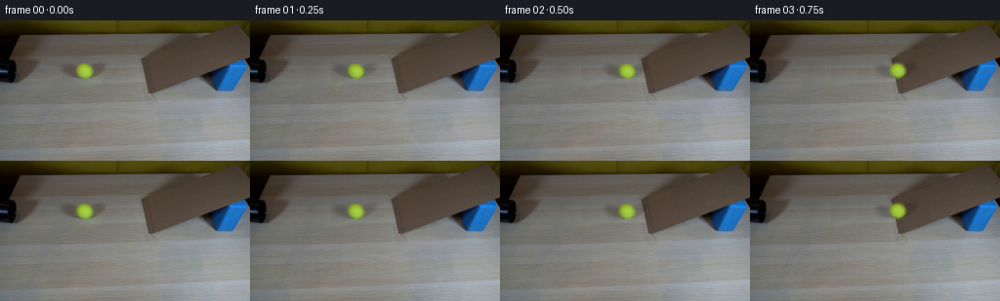
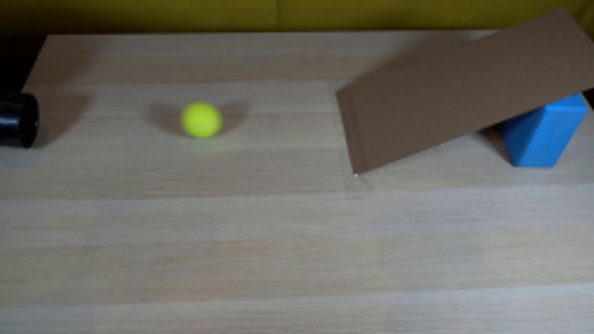
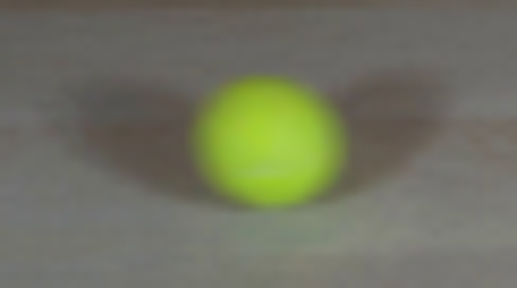
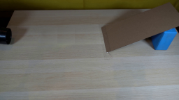
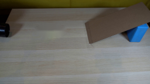
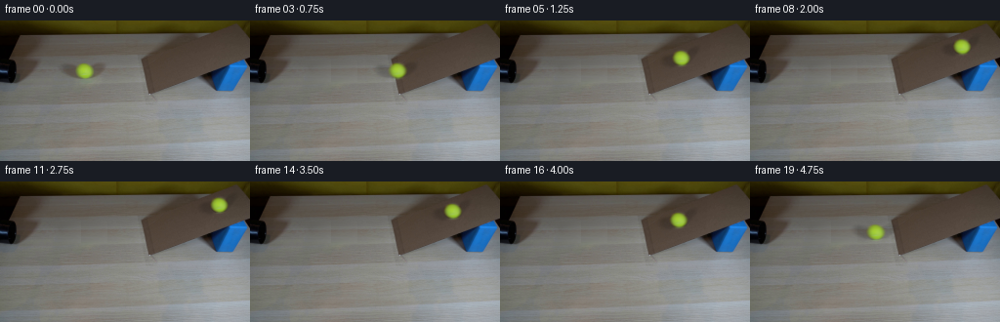
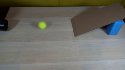
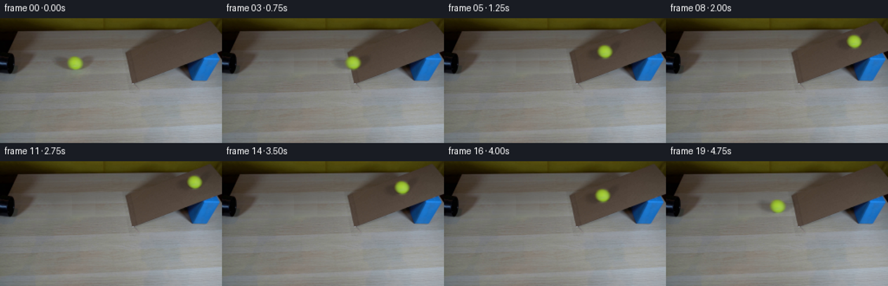
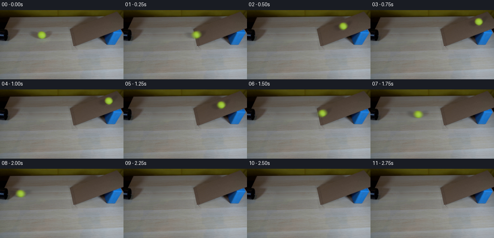

CODING AGENTS AS PIXEL WORLD MODELS
traex/GPT-6.1-Sol · 0020
点击播放 · 原生 RGB 像素
逐轮保存的候选
回放视频、检查图与代码变化。
每份候选均可单独播放。实际图片检查记录在下方工具轨迹中。
候选 01播放与检查图
点击播放 · 原生 RGB 像素

展开代码变化
--- 上一保存版本
+++ 本次保存版本
@@ -0,0 +1,121 @@
+from pathlib import Path
+import numpy as np
+from PIL import Image
+from scipy.ndimage import gaussian_filter, map_coordinates
+from scipy.special import erf
+import cv2
+import artifact_io
+
+ROOT=Path(__file__).resolve().parent
+
+def make_assets(source):
+ h,w,_=source.shape
+ yy,xx=np.mgrid[:h,:w]
+ # Reconstruct the little piece of table hidden by the moving ball and its shadow,
+ # continuing the photographed horizontal grain from either side.
+ plate=source.astype(float).copy()
+ for y in range(36,70):
+ left=np.mean(source[y,49:59],axis=0)
+ right=np.mean(source[y,115:125],axis=0)
+ reference=np.mean(source[y,115:142],axis=0)
+ for x in range(56,116):
+ f=(x-56)/59
+ tex=source[y,115+(x-56)%27].astype(float)-reference
+ plate[y,x]=left*(1-f)+right*f+tex*.5
+ area=np.exp(-(((xx-85.5)/27)**8+((yy-52)/12.5)**8))
+ plate=source*(1-area[...,None])+plate*area[...,None]
+ # Soft photographed foreground matte. Preserve the original fuzzy surface and lighting.
+ cx,cy=86.15,51.35
+ r=np.sqrt(((xx-cx)/8.25)**2+((yy-cy)/7.65)**2)
+ alpha=.5*(1+erf((1-r)*5.8))
+ alpha[r>1.6]=0
+ # Ball shadows are relative illumination rather than a second table-colored sprite.
+ hole=(r<1.31).astype(np.uint8)*255
+ without=cv2.inpaint(source, hole,4,cv2.INPAINT_TELEA).astype(float)
+ ratio=without[...,0]/np.maximum(plate[...,0],1)
+ shadow=np.clip(1-ratio,0,.37)
+ shadow=gaussian_filter(shadow,.75)
+ shadow*=np.exp(-(((xx-85)/28)**8+((yy-51)/11.6)**8))
+ shadow_bg=plate*(1-shadow[...,None])
+ fg=(source.astype(float)-shadow_bg*(1-alpha[...,None]))/np.maximum(alpha[...,None],.005)
+ fg=np.clip(fg,0,255)
+ # Restrict the sprite to the original ball and keep edge extrapolation smooth.
+ fg=fg[38:65,71:102]
+ a=alpha[38:65,71:102]
+ shadow=shadow[35:71,54:120]
+ return plate,fg,a,shadow,cx,cy
+
+def trajectory(t):
+ # A rolling sphere loses forward speed while it climbs the inclined cardboard.
+ x0=86.15
+ v0=88.
+ drag=5.
+ edge=149.
+ t0=(v0-np.sqrt(v0*v0-2*drag*(edge-x0)))/drag
+ v=v0-drag*t0
+ # Smooth, energy-consistent change in tangent speed at the foot of the ramp.
+ v*=.955
+ g=43.0
+ duration=2*v/g
+ if t<t0:
+ x=x0+v0*t-.5*drag*t*t
+ y=51.35+.003*(x-x0)
+ on_ramp=0.
+ elif t<t0+duration:
+ tau=t-t0
+ x=edge+v*tau-.5*g*tau*tau
+ y=51.54-.372*(x-edge)
+ on_ramp=np.clip((x-edge)/9,0,1)
+ else:
+ tau=t-t0-duration
+ speed=v*.945
+ x=edge-speed*tau+2.5*tau*tau
+ y=51.54+.003*(x-edge)
+ on_ramp=0.
+ return x,y,on_ramp
+
+def render(plate,fg,alpha,shadow,cx,cy,t):
+ x,y,ramp=trajectory(t)
+ yy,xx=np.mgrid[:144,:256]
+ # The rolling ball keeps the same apparent size in the fixed camera view.
+ scale=1.-.035*ramp
+ u=(xx-x)/scale+cx-71
+ v=(yy-y)/scale+cy-38
+ aa=map_coordinates(alpha,[v,u],order=1,mode='constant',cval=0)
+ color=np.stack([map_coordinates(fg[...,c],[v,u],order=1,mode='nearest') for c in range(3)],axis=-1)
+ # Gentle changing felt highlights indicate rotation without inventing new objects.
+ rotation=(x-cx)/8.1
+ nx=(xx-x)/(8.25*scale)
+ ny=(yy-y)/(7.65*scale)
+ z=np.sqrt(np.maximum(0,1-nx*nx-ny*ny))
+ seamcoord=ny*np.cos(rotation)+z*np.sin(rotation)
+ seam=2.8*np.exp(-((seamcoord-.28)/.095)**2)*np.clip(z,0,1)
+ color+=seam[...,None]*np.array([.85,.6,1.4])
+ # Transfer the source contact shadow onto the wood or the inclined plane.
+ # On the incline its footprint is shortened along the direction of ascent.
+ dx=xx-x
+ dy=yy-y
+ su=dx/(1-.13*ramp)+cx-54
+ sv=dy+.28*ramp*dx+cy-35
+ shade=map_coordinates(shadow,[sv,su],order=1,mode='constant',cval=0)
+ sh_strength=1-.12*ramp
+ canvas=plate*(1-shade[...,None]*sh_strength)
+ out=canvas*(1-aa[...,None])+color*aa[...,None]
+ return out
+
+def main():
+ first=np.asarray(Image.open(ROOT/'first_frame.png').convert('RGB'))
+ assets=make_assets(first)
+ Image.fromarray(np.uint8(np.clip(assets[0],0,255))).save(ROOT/'.tmp/background.png')
+ frames=[first.copy()]
+ # Integrate a short, constant shutter interval for natural motion softness.
+ for i in range(1,20):
+ t=i/4
+ samples=[render(*assets,t+s) for s in [-.014,-.007,0,.007,.014]]
+ frames.append(np.uint8(np.clip(np.mean(samples,axis=0),0,255)))
+ frames=np.stack(frames)
+ artifact_io.save(frames,ROOT)
+ Image.fromarray(np.uint8(np.clip(render(*assets,0),0,255))).save(ROOT/'.tmp/reconstructed.png')
+
+if __name__=='__main__':
+ main()
候选 02播放与检查图
点击播放 · 原生 RGB 像素


展开代码变化
--- 上一保存版本
+++ 本次保存版本
@@ -20,7 +20,11 @@
reference=np.mean(source[y,115:142],axis=0)
for x in range(56,116):
f=(x-56)/59
- tex=source[y,115+(x-56)%27].astype(float)-reference
+ donor=115+26*f
+ a=int(donor)
+ b=min(a+1,141)
+ tex=(source[y,a].astype(float)*(1-(donor-a))
+ +source[y,b].astype(float)*(donor-a))-reference
plate[y,x]=left*(1-f)+right*f+tex*.5
area=np.exp(-(((xx-85.5)/27)**8+((yy-52)/12.5)**8))
plate=source*(1-area[...,None])+plate*area[...,None]
@@ -48,14 +52,14 @@
def trajectory(t):
# A rolling sphere loses forward speed while it climbs the inclined cardboard.
x0=86.15
- v0=88.
- drag=5.
+ v0=260.
+ drag=18.
edge=149.
t0=(v0-np.sqrt(v0*v0-2*drag*(edge-x0)))/drag
v=v0-drag*t0
# Smooth, energy-consistent change in tangent speed at the foot of the ramp.
v*=.955
- g=43.0
+ g=380.0
duration=2*v/g
if t<t0:
x=x0+v0*t-.5*drag*t*t
@@ -69,7 +73,7 @@
else:
tau=t-t0-duration
speed=v*.945
- x=edge-speed*tau+2.5*tau*tau
+ x=edge-speed*tau+9.*tau*tau
y=51.54+.003*(x-edge)
on_ramp=0.
return x,y,on_ramp
@@ -100,6 +104,12 @@
shade=map_coordinates(shadow,[sv,su],order=1,mode='constant',cval=0)
sh_strength=1-.12*ramp
canvas=plate*(1-shade[...,None]*sh_strength)
+ # The pipe lip remains a foreground occluder if the returning ball rolls into it.
+ if x<22:
+ lip=np.clip((xx-6)/3,0,1)
+ aa*=lip
+ color*=np.clip((x+5)/18,.35,1)
+ canvas=np.where((xx<7)[...,None],plate,canvas)
out=canvas*(1-aa[...,None])+color*aa[...,None]
return out
候选 03播放与检查图
可观测工具轨迹
实际执行的命令与返回图片。
命令 1exit 0
/bin/bash -lc 'ls -la && cat prompt.txt && cat GENERATION_RULES.md'
命令 2exit 0
/bin/bash -lc "cat artifact_io.py && python - <<'PY'
from PIL import Image
im=Image.open('first_frame.png');print(im.size); im.resize((1024,576)).save('.tmp/enlarged.png')
PY"命令 3exit 0
/bin/bash -lc "python - <<'PY'
from PIL import Image
im=Image.open('first_frame.png');im.crop((55,35,116,69)).resize((732,408)).save('.tmp/ball.png')
import numpy as np
p=np.array(im)
for y in [43,45,47,49,51,53,55,57,59,61]:
print(y,p[y,78:97:2].tolist())
PY"命令 4exit 0
/bin/bash -lc "python - <<'PY'
import numpy as np
from PIL import Image
p=np.array(Image.open('first_frame.png'));print('available')
import scipy; print('scipy',scipy.__version__)
try: import cv2;print('cv2',cv2.__version__)
except:pass
for y in [38,40,42,44,46,48,50,52,54,56,58,60,62,64,66]:
print(y,[tuple(np.mean(p[y:y+1,x:x+3],axis=(0,1)).astype(int)) for x in [45,55,65,75,85,95,105,115,125,135]])
PY"命令 5exit 0
/bin/bash -lc "cat > .tmp/test_clean.py <<'PY'
import numpy as np, cv2
from PIL import Image
im=np.asarray(Image.open('first_frame.png')).astype(np.float32)
y,x=np.mgrid[:144,:256]
mask=(((x-86)/28)**2+((y-52)/12)**2<1).astype(np.uint8)*255
clean=cv2.inpaint(im.astype(np.uint8),mask,3,cv2.INPAINT_TELEA)
Image.fromarray(clean).save('.tmp/clean_cv.png')
# Table grain runs across the image: continue the same row-wise variation.
plate=im.copy()
for yy in range(37,69):
left=np.mean(im[yy,50:59],axis=0);right=np.mean(im[yy,114:124],axis=0)
for xx in range(57,115):
f=(xx-57)/57
mean=left*(1-f)+right*f
sx=114+(xx-57)%25
texture=im[yy,sx]-np.mean(im[yy,114:139],axis=0)
plate[yy,xx]=mean+texture*.6
mask2=np.exp(-(((x-85.5)/26)**8+((y-52)/12)**8))
plate=im*(1-mask2[...,None])+plate*mask2[...,None]
Image.fromarray(np.clip(plate,0,255).astype('uint8')).save('.tmp/clean_custom.png')
PY
python .tmp/test_clean.py"命令 6exit 0
/bin/bash -lc "cat > generate.py <<'PY'
from pathlib import Path
import numpy as np
from PIL import Image
from scipy.ndimage import gaussian_filter, map_coordinates
from scipy.special import erf
import cv2
import artifact_io
ROOT=Path(__file__).resolve().parent
def make_assets(source):
h,w,_=source.shape
yy,xx=np.mgrid[:h,:w]
# Reconstruct the little piece of table hidden by the moving ball and its shadow,
# continuing the photographed horizontal grain from either side.
plate=source.astype(float).copy()
for y in range(36,70):
left=np.mean(source[y,49:59],axis=0)
right=np.mean(source[y,115:125],axis=0)
reference=np.mean(source[y,115:142],axis=0)
for x in range(56,116):
f=(x-56)/59
tex=source[y,115+(x-56)%27].astype(float)-reference
plate[y,x]=left*(1-f)+right*f+tex*.5
area=np.exp(-(((xx-85.5)/27)**8+((yy-52)/12.5)**8))
plate=source*(1-area[...,None])+plate*area[...,None]
# Soft photographed foreground matte. Preserve the original fuzzy surface and lighting.
cx,cy=86.15,51.35
r=np.sqrt(((xx-cx)/8.25)**2+((yy-cy)/7.65)**2)
alpha=.5*(1+erf((1-r)*5.8))
alpha[r>1.6]=0
# Ball shadows are relative illumination rather than a second table-colored sprite.
hole=(r<1.31).astype(np.uint8)*255
without=cv2.inpaint(source, hole,4,cv2.INPAINT_TELEA).astype(float)
ratio=without[...,0]/np.maximum(plate[...,0],1)
shadow=np.clip(1-ratio,0,.37)
shadow=gaussian_filter(shadow,.75)
shadow*=np.exp(-(((xx-85)/28)**8+((yy-51)/11.6)**8))
shadow_bg=plate*(1-shadow[...,None])
fg=(source.astype(float)-shadow_bg*(1-alpha[...,None]))/np.maximum(alpha[...,None],.005)
fg=np.clip(fg,0,255)
# Restrict the sprite to the original ball and keep edge extrapolation smooth.
fg=fg[38:65,71:102]
a=alpha[38:65,71:102]
shadow=shadow[35:71,54:120]
return plate,fg,a,shadow,cx,cy
def trajectory(t):
# A rolling sphere loses forward speed while it climbs the inclined cardboard.
x0=86.15
v0=88.
drag=5.
edge=149.
t0=(v0-np.sqrt(v0*v0-2*drag*(edge-x0)))/drag
v=v0-drag*t0
# Smooth, energy-consistent change in tangent speed at the foot of the ramp.
v*=.955
g=43.0
duration=2*v/g
if t<t0:
x=x0+v0*t-.5*drag*t*t
y=51.35+.003*(x-x0)
on_ramp=0.
elif t<t0+duration:
tau=t-t0
x=edge+v*tau-.5*g*tau*tau
y=51.54-.372*(x-edge)
on_ramp=np.clip((x-edge)/9,0,1)
else:
tau=t-t0-duration
speed=v*.945
x=edge-speed*tau+2.5*tau*tau
y=51.54+.003*(x-edge)
on_ramp=0.
return x,y,on_ramp
def render(plate,fg,alpha,shadow,cx,cy,t):
x,y,ramp=trajectory(t)
yy,xx=np.mgrid[:144,:256]
# The rolling ball keeps the same apparent size in the fixed camera view.
scale=1.-.035*ramp
u=(xx-x)/scale+cx-71
v=(yy-y)/scale+cy-38
aa=map_coordinates(alpha,[v,u],order=1,mode='constant',cval=0)
color=np.stack([map_coordinates(fg[...,c],[v,u],order=1,mode='nearest') for c in range(3)],axis=-1)
# Gentle changing felt highlights indicate rotation without inventing new objects.
rotation=(x-cx)/8.1
nx=(xx-x)/(8.25*scale)
ny=(yy-y)/(7.65*scale)
z=np.sqrt(np.maximum(0,1-nx*nx-ny*ny))
seamcoord=ny*np.cos(rotation)+z*np.sin(rotation)
seam=2.8*np.exp(-((seamcoord-.28)/.095)**2)*np.clip(z,0,1)
color+=seam[...,None]*np.array([.85,.6,1.4])
# Transfer the source contact shadow onto the wood or the inclined plane.
# On the incline its footprint is shortened along the direction of ascent.
dx=xx-x
dy=yy-y
su=dx/(1-.13*ramp)+cx-54
sv=dy+.28*ramp*dx+cy-35
shade=map_coordinates(shadow,[sv,su],order=1,mode='constant',cval=0)
sh_strength=1-.12*ramp
canvas=plate*(1-shade[...,None]*sh_strength)
out=canvas*(1-aa[...,None])+color*aa[...,None]
return out
def main():
first=np.asarray(Image.open(ROOT/'first_frame.png').convert('RGB'))
assets=make_assets(first)
Image.fromarray(np.uint8(np.clip(assets[0],0,255))).save(ROOT/'.tmp/background.png')
frames=[first.copy()]
# Integrate a short, constant shutter interval for natural motion softness.
for i in range(1,20):
t=i/4
samples=[render(*assets,t+s) for s in [-.014,-.007,0,.007,.014]]
frames.append(np.uint8(np.clip(np.mean(samples,axis=0),0,255)))
frames=np.stack(frames)
artifact_io.save(frames,ROOT)
Image.fromarray(np.uint8(np.clip(render(*assets,0),0,255))).save(ROOT/'.tmp/reconstructed.png')
if __name__=='__main__':
main()
PY
python generate.py"命令 7exit 0
/bin/bash -lc "python - <<'PY'
from PIL import Image
im=Image.open('inspection.png');im.resize((1536,495)).save('.tmp/check_big.png')
bg=Image.open('.tmp/background.png');bg.resize((1024,576)).save('.tmp/bg_big.png')
PY"命令 8exit 0
/bin/bash -lc "python generate.py && python - <<'PY'
from PIL import Image,ImageDraw
import numpy as np
im=Image.new('RGB',(256*4,165*3),(25,28,35));d=ImageDraw.Draw(im)
for i in range(12):
x=(i%4)*256;y=(i//4)*165
d.text((x+4,y+3),f'{i:02d} - {i*.25:.2f}s',fill='white')
im.paste(Image.open(f'frames/{i:02d}.png'),(x,y+21))
im.save('.tmp/overview.png')
p=np.load('pixels.npz')['pixels'];print(p.shape,p.dtype)
a=np.asarray(Image.open('first_frame.png'));b=np.asarray(Image.open('frames/00.png'));assert np.array_equal(a,b)
print('First frame exact; 20 RGB frames saved.')
PY"视觉工具实际返回图片 1

视觉工具实际返回图片 2

视觉工具实际返回图片 3

视觉工具实际返回图片 4

视觉工具实际返回图片 5

视觉工具实际返回图片 6

视觉工具实际返回图片 7

视觉工具实际返回图片 8
视觉工具实际返回图片 9

视觉工具实际返回图片 10

保存候选 3 份；完成命令 8 次；可验证图片返回 10 张。原始 API 响应与完整日志保留在本地。